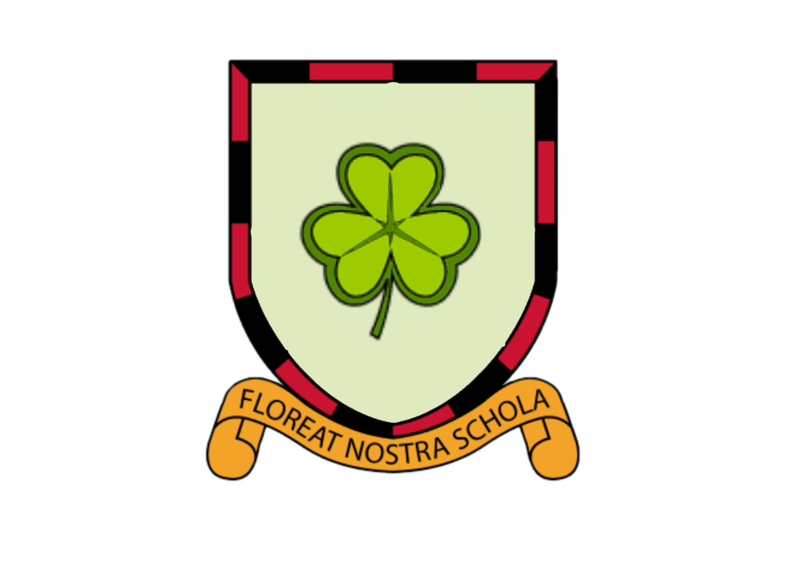

Специально для алгоритмов. Это сайт про один из houses в British International School Moscow. Эти houses являются мотивационной системой для учнеников.
Специально для алгоритмов. Это сайт про один из houses в British International School Moscow. Эти houses являются мотивационной системой для учнеников.
Специально для алгоритмов. Это сайт про один из houses в British International School Moscow. Эти houses являются мотивационной системой для учнеников.

Shamrsock BIS🔥
What is Shamrock in BIS 5?
Shamrock is one out of 4 houses in a motivitional system of houses in British International school numebr 5. There are four houses: Rose, Shamrock, Thistle, Daffodil. Students can earn points for their house by being a good student in english classes. Teacher gives each students points from 1 to 5 looking at how he or she studies. Also students can earn points by participating n some competitions in our school
How can I become a member of shamrock?
At start you need to become a student of British International School in Moscow number 5. In fifth grade there is an event where you get randomly to any of four houses. There is a 25% chance that you will get in this house so you need to be lucky enough!
Our participants:
MR O'DONNEL
Year 5:Polina Prokhozayeva, Vera Matveeva, Alisa Ostrovskaya
Year 6: Mitra Aziz Khamayun, Anna Bolsunovskaya, Alim Ibadov, Elizabeth Martin, Uliana Titova, Dmitry Vinogradov, Emilia Nekhaichik
Year 7: Daniel Oruch, Yusif Aliev, Anastasia Balyabina, Arseniy Folmer, Ilya Oruch
Year 8: Evelina Zadubrovskya(Captain), Michael Kobin(Captain), Dmitry Kogan(Captain), Mayla Oruch(Captain)
Year 9: Gleb Sokolov, Adam Oruch
Year 10: Deniz Efe, Alexander Reznikov, Polina Martyanova, Alisa Kirillova, Diana Chernysheva
Year 11: Raul Aliev, Dmitriy Gologvkin, Inessa Oganesyan